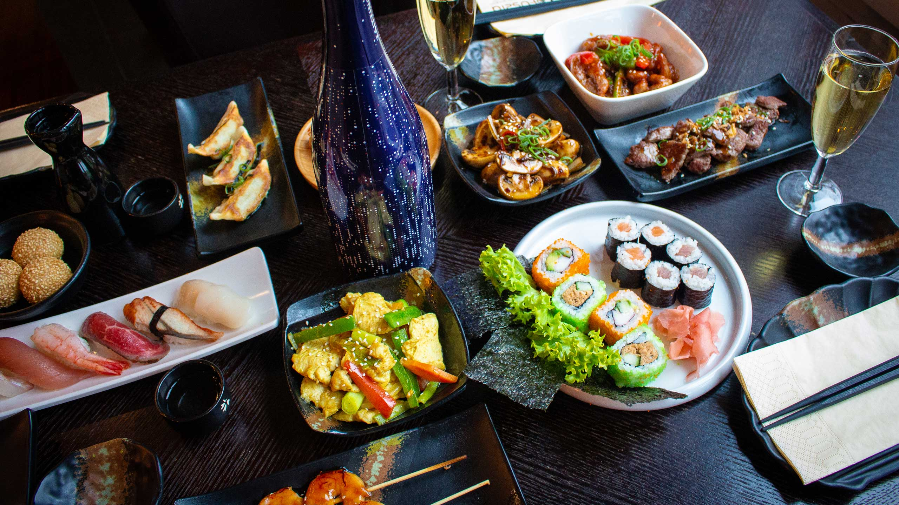
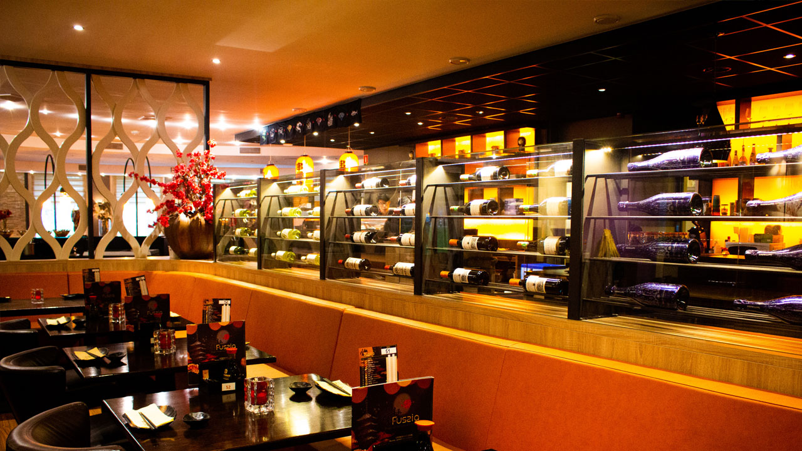
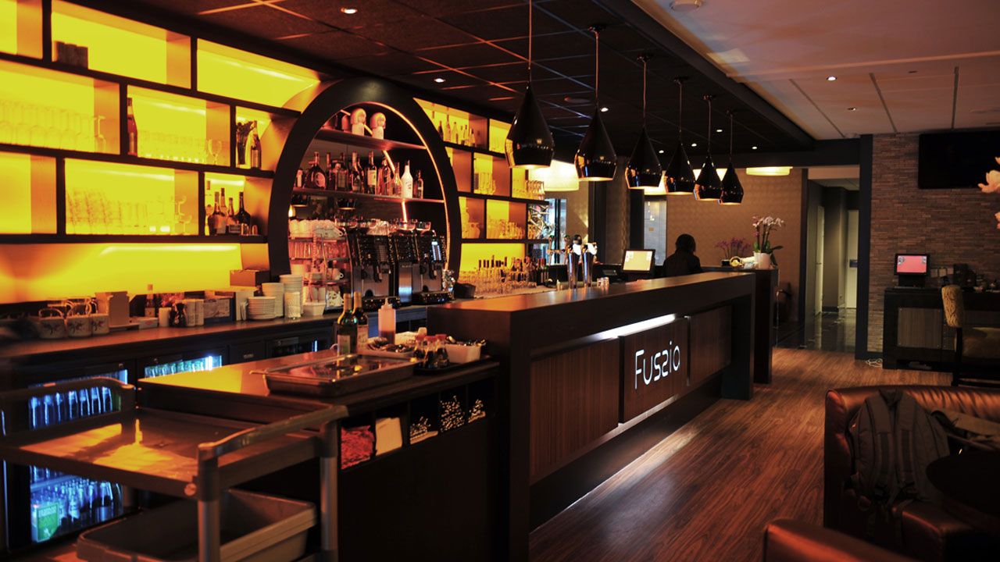
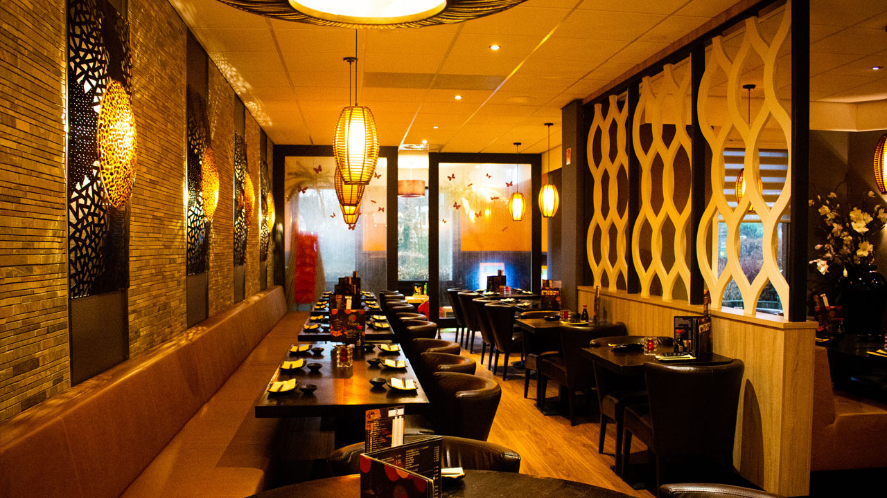
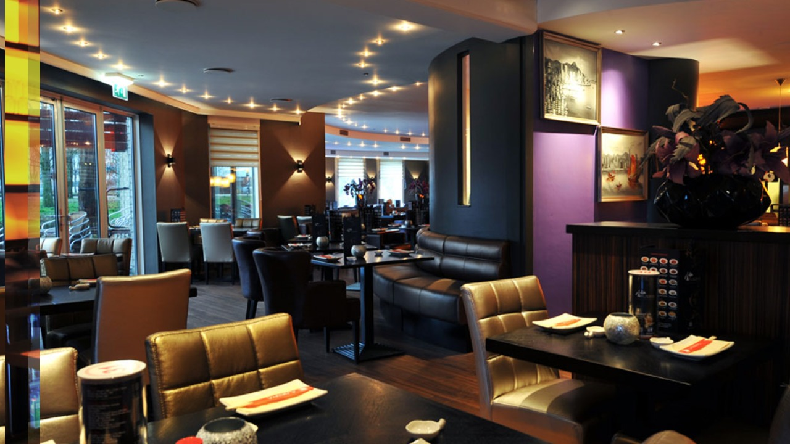

Gerechten van Asian chefs
De chefs van Fussia kennen de fijne kneepjes van de Japanse en Chinese keuken. Met zorg samengesteld, voor een voortreffelijke smaakervaring.

All you can eat sushi, grill & fusion in Amstelveen
Japanse en Chinese gerechten van de kaart, twee uur lang, en alles wordt aan tafel geserveerd.
€ 39,50 per persoon, dinsdag t/m zondag
Fussia hanteert een eigen all you can eat-concept. Voor een vast bedrag bestelt u onbeperkt van de kaart, naar eigen wens. U geniet twee uur lang, in vijf rondes van vier gerechten per ronde.
Alle gerechten worden aan tafel geserveerd, behalve de desserts: die kiest u zelf aan de dessertbalie. Het is rustiger, professioneler en u hoeft niet in de rij te staan.
Gereserveerd? Wij houden uw tafel tot maximaal 20 minuten na het afgesproken tijdstip voor u vrij.
Reserveer: 020 822 7188De kaart bestaat grotendeels uit Japanse sushi-, frituur- en grillgerechten, aangevuld met de Chinese keuken, vegetarische wokgerechten, soepen, frisse salades en desserts. Hieronder het sushi-, soep- en saladedeel; u bestelt per nummer.
Bij de special sushi en sashimi geldt een kleine toeslag, die staat bij het gerecht. Volledige menukaart (PDF)

Het is altijd weer een feest om zowel het eten als de sfeer te proeven in de warme entourage (met airco) van ons restaurant. Of u nu met partner, zakenrelatie of gezin komt.
De chefs van Fussia kennen de fijne kneepjes van de Japanse en Chinese keuken. Met zorg samengesteld, voor een voortreffelijke smaakervaring.
Onze wijnkaart combineert de juiste wijnen met het eten op het menu, biedt een reeks prijsranges en combineert vertrouwdheid met iets bijzonders.
Cocktails zijn drankjes waar je langzaam aan wilt nippen en echt van wilt genieten. We zijn er om u een avond te verwennen.
Omdat iedereen zijn dessert op zijn eigen manier wil, is de dessertbalie de plek waar u voor uzelf de meest unieke koude creaties maakt.



U kunt bij Fussia ook afhalen. Plaats uw bestelling online en betaal contant aan de deur of met iDEAL.
Bestel online via Foodtown. Afhalen kan dinsdag t/m zondag vanaf 16:00 uur. Na uw bestelling ontvangt u een bevestiging per e-mail; kijk ook even in uw spamfolder. Geen bevestiging ontvangen? Neem dan contact met ons op.
Wij proberen uw bestelling altijd zo snel mogelijk klaar te hebben. Op zon- en feestdagen kan het door drukte wat langer duren.
Wij gaan zeer zorgvuldig om met uw voedselallergie of -intolerantie, maar kruisbesmetting is in onze keuken nooit volledig uit te sluiten. Geef uw allergieën duidelijk door bij uw bestelling.
Fussia is uitermate geschikt als feestlocatie voor bruiloften en partijen. Neem voor meer informatie vrijblijvend contact met ons op.
Mail over uw feestVoor vergaderingen en congressen verhuren wij diverse zalen, eventueel compleet met catering en bediening.
Vraag naar de zalenBij Fussia parkeert u gratis. We hebben een eigen parkeerterrein met voldoende plaats, zodat er altijd wel een plekje vrij is.
Een avond Fussia is altijd een bijzondere ervaring, of u nu met familie, collega's of zakenrelaties komt.
| Maandag | gesloten (behalve feestdagen) |
|---|---|
| Dinsdag t/m donderdag | 16:00 – 22:15 |
| Vrijdag t/m zondag | 16:00 – 22:30 |
Telefonisch bereikbaar vanaf 13:00 uur, zes dagen per week.